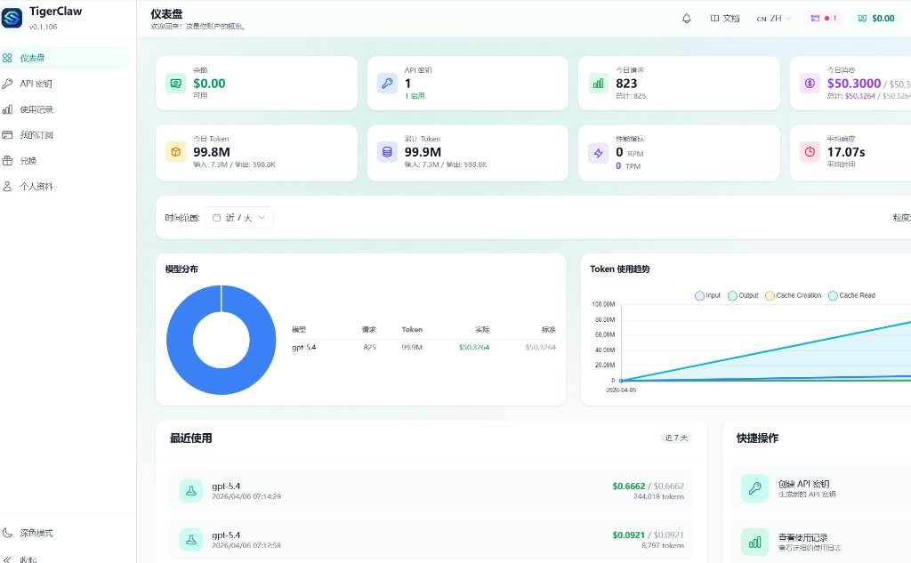
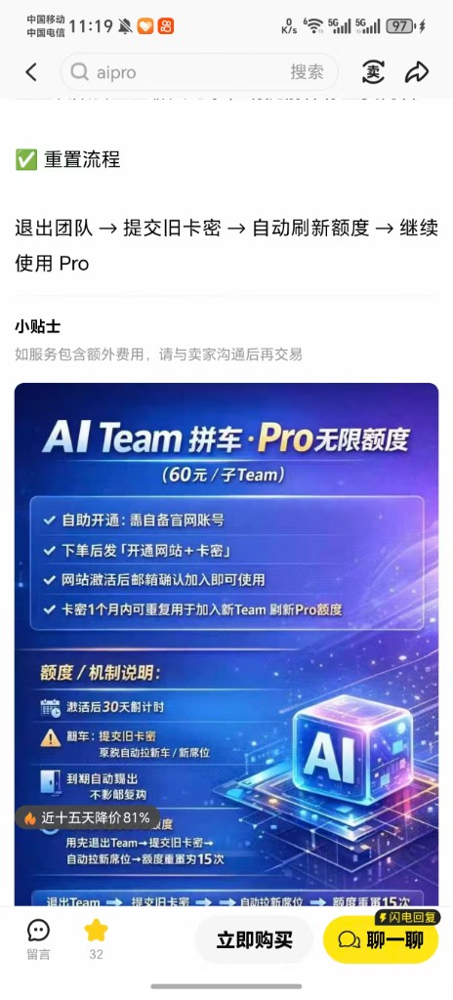
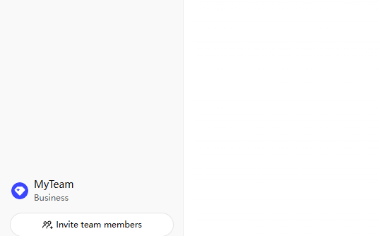
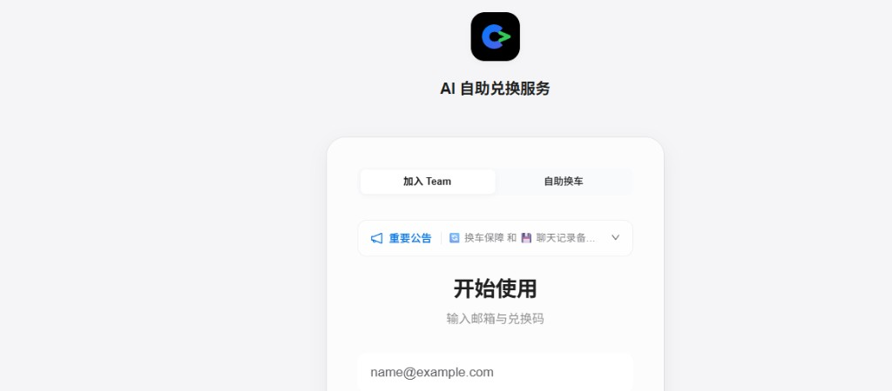

渠道评测 GPT Pro / API 中转 · 个人笔记
本文为个人使用过程中的主观记录，用于说明「我试过哪些付费形态、爽点与坑在哪」。不是购买指南，不指向具体卖家，价格与规则随时可能变化。
第三方中转、拼车 Team 等可能涉及服务条款与账号风险；请自行阅读 OpenAI / 平台政策并承担后果。本站与任何商家无合作。
为什么要写「渠道评测」
在折腾 Claude Code、编辑器与各类模型入口时，往往会遇到：官方订阅、卖家自建中转 API、Team 拼车拉号等并行选项。把亲身经历记下来，方便以后自己查阅，也给读者一个「真实世界长什么样」的参照（以截图为准，文字为当时理解）。
一类：中转 API（约「每天 50 刀」档）
在二手/服务市场上常见文案是：满血 API、稳定中转、每日约几十美元使用额度等。我实际买的是按天封顶、按段时长计费的一类套餐（例如标价「7 天」的打包）。
体验好的地方：卖家自建中转站，走国内直连类宣传；模型能力主观上正常，没有明显「降智」感。当日额度用满时，仪表盘上会顶在约 50 美元/日这一档（与商品描述一致，见下图 2）。
踩坑：每日额度不能因「续买一单」而叠加。我第一次用满后，又下了一单，结果只是有效期 +7 天（例如从 7 天变成 14 天），当天仍然只有那一档日限额，并不能「再买一单立刻加倍」。燃眉之急只能换思路：例如新账号或等次日重置。这种「续费只加时长不加当日桶」的体感，和我早年用某些 VPN 按量/按天套餐时类似——买多了是时间变长，不是当下带宽翻倍。

另一类：GPT Pro · Team 拼车（低价、靠「换车」续命）
另一路是把你的官方账号拉进别人的 Business Team，用团队席位的 Pro 权益；价格可以做到很低（例如十几元量级）。卖点往往是：网页版 GPT Pro 也可用、不想用可以停。
好处：成本不高；权益落在自己账号上，主观感受接近「直充到自己号里用 Team」。
坏处（对我这种高频的人）：额度或风控触顶后要退出 Team → 用兑换流程换到新车位（俗称换车），操作路径长，和流畅连续工作流不搭。且渠道规则里往往有每日换车次数上限（我遇到的是每天最多约 15 次），大量来回切换时很快就会顶满。若你用量大、会话长，要心理预期：这是在省钱与折腾之间做权衡。



个人向小结（非普适结论）
| 维度 | 中转 API（日封顶型） | Team 拼车 |
|---|---|---|
| 成本体感 | 按「天数 + 日桶」打包；续买常只加天数 | 单价可很低；适合能接受折腾的人 |
| 高峰续命 | 当日顶满后难靠续单立刻加桶，多需新号或等重置 | 依赖换车；有每日次数上限，高频会烦 |
| 工作流 | API 调用链清晰；适合工具链集成 | 更偏「账号 + 网页」；换车打断心流 |
若你只图稳定干活，官方或正规企业采购仍是长期默认解；上述两类更适合理解市场长什么样，而不是「抄作业必成功」。